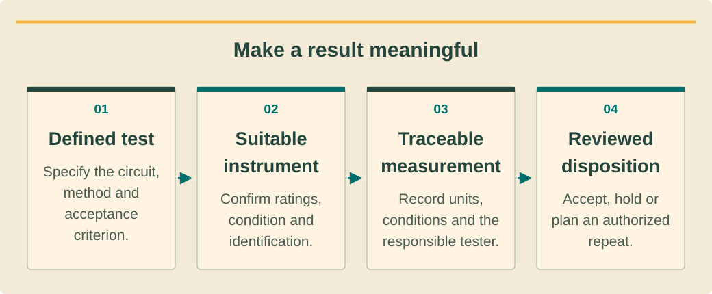

Commissioning, technical service and O&Mהפעלה, שירות טכני ותחזוקהการทดสอบส่งมอบ บริการเทคนิค และบำรุงรักษา · 2 / 9
Commissioning plans and measurement qualityתוכניות הפעלה ואיכות מדידהแผนทดสอบส่งมอบและคุณภาพการวัด
Make every commissioning result traceable to a safe method and acceptance criterion.לקשור כל תוצאת הפעלה לשיטה בטוחה וקריטריון קבלה.ให้ทุกผลทดสอบย้อนถึงวิธีปลอดภัยและเกณฑ์รับ.
What you will be able to doמה תדעו לעשותสิ่งที่คุณจะทำได้
- Build an acceptance matrix before testing.לבנות מטריצת קבלה לפני בדיקה.ทำตารางรับก่อนทดสอบ.
- Recognize invalid or incomplete measurements.לזהות מדידה לא תקפה או חסרה.ระบุการวัดไม่สมบูรณ์หรือใช้ไม่ได้.
- Separate observation from release authority.להפריד תצפית מסמכות שחרור.แยกสิ่งสังเกตกับสิทธิ์ปล่อย.
Plan the decision firstלתכנן החלטה קודםวางการตัดสินใจก่อน
An acceptance matrix connects each required function to a method, prerequisite, expected criterion, responsible tester and release authority. Build it before arriving on site. This avoids collecting many numbers without knowing which decisions they support or discovering missing equipment during a controlled shutdown.מטריצת קבלה מקשרת תפקוד לשיטה, תנאי מוקדם, קריטריון, בודק ומאשר. בונים לפני הגעה. כך נמנעת אסיפת מספרים ללא החלטה או גילוי ציוד חסר במהלך השבתה מבוקרת.ตารางรับเชื่อมหน้าที่กับวิธี เงื่อนไขก่อน เกณฑ์ ผู้ทดสอบ และผู้ปล่อย ทำก่อนถึงไซต์ เพื่อไม่เก็บตัวเลขมากแต่ไม่รู้ใช้ตัดสินอะไรหรือพบเครื่องมือขาดระหว่างหยุดระบบควบคุม.
Use applicable full procedures, exact equipment manuals and the approved local project requirements. IEC 62446-1 provides the documentation/inspection/commissioning framework, but its public scope does not reveal every acceptance value. Keep unconfirmed criteria open rather than inventing thresholds from a similar installation.משתמשים בנהלים מלאים, מדריכי ציוד ודרישות מקומיות מאושרות. IEC 62446-1 מספק מסגרת, אך היקף ציבורי אינו כל ערכי קבלה. קריטריון לא מאושר נשאר פתוח ולא מומצא מאתר דומה.ใช้วิธีฉบับเต็ม คู่มือรุ่นจริง และข้อกำหนดโครงการท้องถิ่น IEC 62446-1 ให้กรอบเอกสาร/ตรวจ/ทดสอบ แต่ขอบเขตสาธารณะไม่ได้ให้ทุกค่า เกณฑ์ยังไม่ยืนยันต้องเปิดไว้ ไม่เดาจากไซต์คล้าย.
A number needs contextמספר דורש הקשרตัวเลขต้องมีบริบท
A valid record identifies the instrument, calibration or verification status, range, units, circuit and operating conditions. Instrument suitability includes the measurement environment and leads, not merely whether the display has enough digits. Authorized personnel must select suitable equipment for the actual hazards.רישום תקף מזהה מכשיר, מצב כיול או אימות, טווח, יחידות, מעגל ותנאי עבודה. התאמה כוללת סביבת מדידה וכבלים, לא רק ספרות תצוגה. צוות מורשה בוחר ציוד לסיכונים.บันทึกที่ใช้ได้ระบุเครื่องมือ สถานะสอบเทียบ/ยืนยัน ช่วง หน่วย วงจร และสภาพใช้งาน ความเหมาะรวมสภาพวัดกับสายวัด ไม่ใช่จำนวนหลักหน้าจอ ผู้มีสิทธิ์ต้องเลือกให้เหมาะอันตรายจริง.
Compare like-for-like conditions before calling a difference a fault. Irradiance, module temperature, battery state and load can change results. When conditions differ, state the limitation and repeat only when the approved plan justifies it; extra readings cannot rescue an unidentified circuit or unsuitable method.משווים תנאים דומים לפני הכרזת תקלה. קרינה, טמפרטורה, מצב מצבר ועומס משנים תוצאה. כששונים מציינים מגבלה וחוזרים רק לפי תוכנית; עוד קריאות לא מתקנות מעגל לא מזוהה או שיטה שגויה.เทียบสภาพเดียวกันก่อนเรียกความต่างว่าเสีย รังสี อุณหภูมิแผง สภาพแบตเตอรี่ และโหลดเปลี่ยนผลได้ หากต่างให้ระบุข้อจำกัดและทำซ้ำเมื่อแผนรองรับ ค่ามากขึ้นไม่แก้วงจรไม่ทราบหรือวิธีผิด.
See the ideaרואים את הרעיוןมองเห็นแนวคิด
Make a result meaningfulלתת משמעות לתוצאהทำให้ผลวัดมีความหมาย

Read the diagram as textקריאת התרשים כטקסטอ่านแผนภาพเป็นข้อความ
- Defined testבדיקה מוגדרתทดสอบชัดเจน — Specify the circuit, method and acceptance criterion.מגדירים מעגל, שיטה וקריטריון קבלה.ระบุวงจร วิธี และเกณฑ์รับ.
- Suitable instrumentמכשיר מתאיםเครื่องเหมาะสม — Confirm ratings, condition and identification.מאמתים דירוגים, מצב וזיהוי.ยืนยันพิกัด สภาพ และรหัส.
- Traceable measurementמדידה עקיבהผลวัดตามรอยได้ — Record units, conditions and the responsible tester.מתעדים יחידות, תנאים ובודק אחראי.บันทึกหน่วย สภาพ และผู้ทดสอบ.
- Reviewed dispositionהכרעה שנבדקהผลพิจารณาแล้ว — Accept, hold or plan an authorized repeat.מקבלים, עוצרים או מתכננים חזרה מורשית.รับ พัก หรือวางทดสอบซ้ำอนุญาต.
Test boundaries protect equipmentגבולות בדיקה מגינים על ציודขอบเขตทดสอบปกป้องอุปกรณ์
Inspection should establish what is connected before electrical testing begins. Some tests require electronics or protective components to be isolated in a manufacturer-defined way. Applying an insulation test indiscriminately to connected electronics can damage equipment and invalidate the result; use the exact approved method.בדיקה מקדימה קובעת מה מחובר לפני מדידות. בדיקות מסוימות דורשות הפרדת אלקטרוניקה או הגנות לפי יצרן. בדיקת בידוד שרירותית לאלקטרוניקה מחוברת עלולה להזיק ולפסול תוצאה; נדרשת שיטה מאושרת מדויקת.ตรวจให้รู้สิ่งที่ต่อก่อนทดสอบไฟฟ้า บางการทดสอบต้องแยกอิเล็กทรอนิกส์หรือป้องกันตามผู้ผลิต ทดสอบฉนวนใส่วงจรอิเล็กทรอนิกส์ต่ออยู่โดยไม่แยกแยะอาจทำเสียและผลใช้ไม่ได้ ต้องตามวิธีอนุมัติจริง.
This lesson assesses supplied reports and an isolated demonstration chosen by the supervisor. It intentionally omits generic live probing and switching instructions. The competent commissioning lead owns source isolation, absence-of-voltage verification where required, controlled testing and restoration for the specific system.השיעור מעריך דוחות והדגמה מבודדת שבוחר ממונה. אינו כולל דיגום חי או מיתוג כללי. מוביל הפעלה כשיר אחראי בידוד מקורות, אימות היעדר מתח כשנדרש, בדיקה והשבה למערכת המסוימת.บทนี้ประเมินรายงานที่ให้กับสาธิตแยกพลังงานที่หัวหน้าเลือก ไม่ให้วิธีจิ้มวัดมีไฟหรือสับทั่วไป ผู้นำทดสอบที่มีความสามารถรับผิดชอบแยกแหล่ง ยืนยันไร้แรงดันเมื่อจำเป็น ทดสอบ และคืนระบบจริง.
Sign results, not assumptionsלחתום תוצאות ולא הנחותลงนามผล ไม่ใช่สมมติฐาน
A test record should distinguish pass, fail and not verified. Include deviations and any approved retest reference, preserving earlier results rather than overwriting them. A commissioning dossier tells the story of acceptance, including why a corrective action was needed and how its effectiveness was demonstrated.דוח מבדיל עבר, נכשל ולא אומת. כולל חריגות והפניית בדיקה חוזרת ושומר תוצאות קודמות. התיק מתאר קבלה, סיבת תיקון והוכחת יעילותו.บันทึกแยกผ่าน ไม่ผ่าน และยังไม่ยืนยัน รวมข้อเบี่ยงเบนและอ้างทดสอบซ้ำอนุมัติ เก็บผลเก่าไม่เขียนทับ แฟ้มบอกเรื่องการรับ รวมเหตุที่ต้องแก้และแสดงว่าแก้ได้ผลอย่างไร.
The authorized release decision considers the complete matrix, outstanding defects and applicable permissions. A single impressive production number does not establish transfer behavior, protective operation or documentation completeness. Explain precisely which functions were tested and which conditions were outside the demonstrated scope.החלטת שחרור מורשית בוחנת מטריצה מלאה, ליקויים והרשאות. מספר ייצור מרשים אינו מוכיח מעבר, הגנה או שלמות תיעוד. מסבירים בדיוק תפקודים שנבדקו ותנאים מחוץ להדגמה.การปล่อยที่มีสิทธิ์ดูตารางครบ ข้อบกพร่อง และสิทธิ์เกี่ยวข้อง ตัวเลขผลิตดีหนึ่งค่าไม่พิสูจน์โอนแหล่ง ป้องกัน หรือเอกสารครบ อธิบายหน้าที่ทดสอบและสภาพที่อยู่นอกขอบเขตสาธิตให้ตรง.
Worked exampleדוגמה פתורהตัวอย่างพร้อมวิธีทำ
A report without unitsדוח ללא יחידותรายงานไม่มีหน่วย
Invented case: a supplied worksheet records “0.8” for a circuit but omits units, method and instrument identification.מקרה מדומה: גליון רושם ״0.8״ למעגל בלי יחידות, שיטה או מכשיר.กรณีสมมติ แผ่นงานบันทึก “0.8” ให้วงจร แต่ไม่มีหน่วย วิธี หรือรหัสเครื่อง.
- Classify the result as unverified rather than interpreting the number.מסווגים לא מאומת ולא מפרשים מספר.จัดยังไม่ยืนยัน ไม่ตีความเลข.
- Seek the original traceable record and applicable acceptance criterion.מחפשים רישום מקורי וקריטריון קבלה.หาบันทึกต้นฉบับกับเกณฑ์รับ.
- If evidence cannot be recovered, have the lead plan an authorized repeat.אם לא הושגה ראיה, המוביל מתכנן חזרה מורשית.ถ้ากู้ไม่ได้ให้ผู้นำวางทดสอบซ้ำอนุญาต.
More decimal places would not solve missing meaning or traceability.עוד ספרות עשרוניות אינן פותרות חוסר משמעות או עקיבות.เพิ่มทศนิยมไม่แก้ความหมายหรือร่องรอยที่ขาด.
Your turnעכשיו מתרגליםถึงเวลาฝึกฝน
Different operating conditionsתנאי עבודה שוניםสภาพทำงานต่างกัน
Invented exercise: two supplied PV power readings differ by 20%, but one was taken during cloud and the other in clear sun. A replacement inverter is proposed.תרגיל מדומה: קריאות הספק שונות ב-20%, אחת בענן והשנייה בשמש. מוצעת החלפת ממיר.แบบฝึกสมมติ ค่ากำลัง PV ต่าง 20% แต่ครั้งหนึ่งเมฆ อีกครั้งฟ้าใส เสนอเปลี่ยนอินเวอร์เตอร์.
- Explain the comparison limitation.להסביר מגבלת השוואה.อธิบายข้อจำกัดเทียบ.
- Propose an evidence-led next step.להציע שלב מבוסס ראיות.เสนอขั้นตามหลักฐาน.
Compare with the model answerהשוו לפתרון לדוגמהเปรียบเทียบกับแนวคำตอบ
The conditions are not comparable, so the difference alone does not isolate an inverter fault. Review timestamps, irradiance, temperature and system state; use the approved plan to obtain comparable evidence if necessary. Preserve the original readings and avoid a replacement decision unsupported by diagnosis.התנאים אינם בני השוואה, ולכן הפער אינו מבודד תקלה בממיר. בודקים זמן, קרינה, טמפרטורה ומצב ומקבלים ראיות השוואתיות בתוכנית מאושרת לפי צורך. שומרים קריאות ולא מחליפים בלי אבחון.สภาพเทียบไม่ได้ ความต่างอย่างเดียวจึงไม่ระบุอินเวอร์เตอร์เสีย ดูเวลา รังสี อุณหภูมิ และสถานะ ใช้แผนอนุมัติเก็บหลักฐานเทียบได้หากจำเป็น เก็บค่าเดิมและอย่าเปลี่ยนโดยไร้วินิจฉัย.
Your exercise notebookמחברת התרגול שלכםสมุดแบบฝึกหัดของคุณ
Write your reasoning and the evidence you would collect. Notes stay in this browser. Export a copy to share with your trainer.כתבו את דרך החשיבה ואת הראיות שתאספו. המחברת נשמרת בדפדפן הזה. הורידו עותק כדי להעביר לבדיקה של אחראי ההדרכה.เขียนเหตุผลและหลักฐานที่จะรวบรวม บันทึกเก็บในเบราว์เซอร์นี้ ส่งออกสำเนาเพื่อส่งให้ผู้ฝึกสอนตรวจ
Before handing overלפני שמעבירים הלאהก่อนส่งมอบงาน
- Method and criteria agreed.שיטה וקריטריון הוסכמו.ตกลงวิธีกับเกณฑ์.
- Instrument and conditions recorded.מכשיר ותנאים מתועדים.บันทึกเครื่องมือกับสภาพ.
- Unverified functions remain explicit.תפקודים לא מאומתים גלויים.หน้าที่ยังไม่ยืนยันชัด.
Watch and applyצופים ומיישמיםดูแล้วนำไปใช้
A professional demonstrationהדגמה מקצועיתการสาธิตจากผู้เชี่ยวชาญ
Before pressing playלפני שמפעיליםก่อนกดเล่น
Compare the measurement task with the instrument category and purpose discussed by the presenter.השוו משימת מדידה לקטגוריית המכשיר ולמטרתו בדיון.เทียบงานวัดกับประเภทและวัตถุประสงค์เครื่องที่ผู้สอนกล่าว.
Tools and Techniques for Commissioning and Maintaining PV Systems
English webinar presented by Fluke Solar Application Specialist Will White, hosted by Test Equipment Depot. Covers measurement categories, commissioning and O&M. US examples and demonstrated procedures require local and model-specific review.וובינר באנגלית של מומחה הסולאר ב-Fluke, Will White, באירוח Test Equipment Depot. עוסק בקטגוריות מדידה, הפעלה ותחזוקה. דוגמאות אמריקאיות ונהלים מחייבים בדיקת תחולה מקומית ודגם.เว็บบินาร์ภาษาอังกฤษโดย Will White ผู้เชี่ยวชาญโซลาร์ Fluke จัดโดย Test Equipment Depot ครอบคลุมประเภทวัด ทดสอบส่งมอบ และ O&M ตัวอย่างสหรัฐฯ และวิธีต้องตรวจท้องถิ่นกับรุ่น.
Connect it to this lessonמחברים לחומר בשיעורเชื่อมกับบทเรียนนี้
Measurement quality includes method, instrument and evidence, not just a displayed number.איכות מדידה כוללת שיטה, מכשיר וראיות, מעבר למספר בתצוגה.คุณภาพวัดรวมวิธี เครื่อง และหลักฐาน ไม่ใช่เลขหน้าจออย่างเดียว.
Pause and explainעוצרים ומסביריםหยุดแล้วอธิบาย
Which missing fields prevent you from accepting the worksheet’s “0.8”?אילו שדות חסרים מונעים קבלת ״0.8״ בגליון?ช่องใดที่ขาดทำให้รับ “0.8” ในแผ่นงานไม่ได้?
The guidance is available in all three languages. The video keeps the publisher’s original audio; captions and translations depend on the publisher and YouTube. If the embedded player is unavailable, use the source link.הנחיות הצפייה זמינות בשלוש השפות. הסרטון נשאר בשפת המקור; כתוביות ותרגום תלויים במפרסם וב־YouTube. אם הנגן אינו זמין, פתחו את קישור המקור.คำแนะนำมีครบสามภาษา วิดีโอใช้เสียงต้นฉบับ คำบรรยายและการแปลขึ้นกับผู้เผยแพร่และ YouTube หากเครื่องเล่นใช้ไม่ได้ให้เปิดลิงก์ต้นฉบับ
Check your understanding · 80% to passבדיקת הבנה · ציון מעבר 80%ตรวจความเข้าใจ · ผ่านที่ 80%
Sources and review datesמקורות ותאריכי בדיקהแหล่งข้อมูลและวันที่ตรวจสอบ
- IEC 62446-1 commissioning/documentation scope
Public scope for PV commissioning, inspection and documentation; obtain applicable full procedures and limits.היקף ציבורי להפעלה, בדיקה ותיעוד סולאר; נדרשים נהלים וגבולות מלאים החלים בפרויקט.ขอบเขตสาธารณะสำหรับทดสอบ ตรวจ และจัดเอกสาร PV ต้องใช้ขั้นตอนและเกณฑ์ฉบับเต็มที่เกี่ยวข้อง
- PEA interconnection regulatory index
Official Thailand interconnection document index; confirm the applicable notice and project approval, not a universal rule.אינדקס רשמי של מסמכי חיבור בתאילנד; יש לאמת הודעה ואישור פרויקט מתאימים, לא כלל אחיד.ดัชนีข้อกำหนดเชื่อมต่อทางการของไทย ต้องยืนยันประกาศและอนุมัติเฉพาะโครงการ ไม่ใช่กฎเดียวทุกกรณี
- IEC 61724-1 monitoring scope
Public performance-monitoring scope; no monitoring-class certification is implied.היקף ציבורי לניטור ביצועים; אין טענה להסמכת דרגת ניטור.ขอบเขตสาธารณะการติดตามสมรรถนะ ไม่ได้หมายถึงการรับรองชั้นระบบติดตาม
- PV and energy-storage O&M best practices
Historic 2018 PV/storage O&M guide; not current Thai law or a substitute for equipment manuals.מדריך תחזוקת סולאר ואגירה משנת 2018; אינו חוק תאילנדי עדכני או תחליף למדריכי ציוד.คู่มือบำรุงรักษา PV/กักเก็บปี 2018 ไม่ใช่กฎหมายไทยปัจจุบันหรือคู่มืออุปกรณ์แทน
- MultiPlus-II 230V installation
MultiPlus-II 230V family example only; not proof of Thai approval or universal neutral/RCD arrangements.דוגמה למשפחת MultiPlus-II 230V בלבד; אינה הוכחת אישור תאילנדי או סידור אפס ופחת אחיד.ตัวอย่างเฉพาะ MultiPlus-II 230V ไม่ใช่หลักฐานอนุมัติในไทยหรือรูปแบบนิวทรัล/RCD ที่ใช้ได้ทุกระบบ
Reading and quizzes build knowledge. Field work and practical sign-off require the responsible qualified professional.קריאה וחידונים בונים ידע. עבודת שטח ואישור כשירות מעשית נעשים בהנחיית בעל המקצוע המוסמך והאחראי.การอ่านและแบบทดสอบสร้างความรู้ งานภาคสนามและการรับรองความสามารถปฏิบัติต้องอยู่ภายใต้ผู้เชี่ยวชาญที่มีคุณสมบัติและรับผิดชอบ